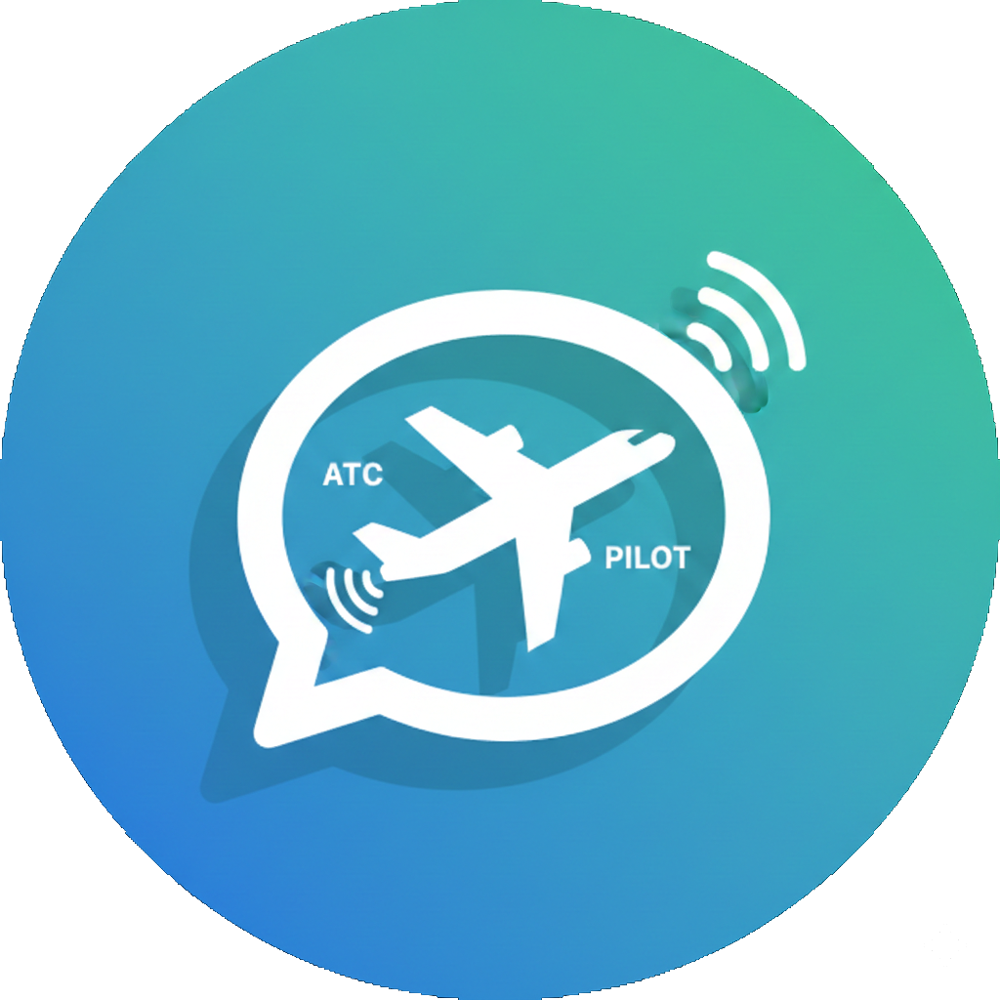
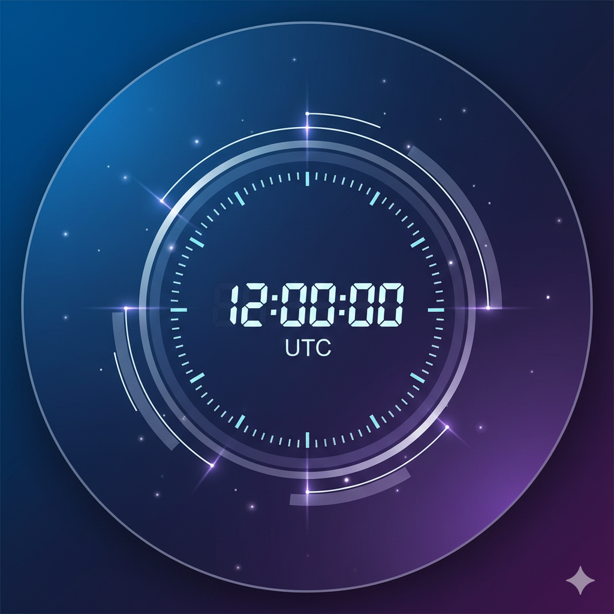
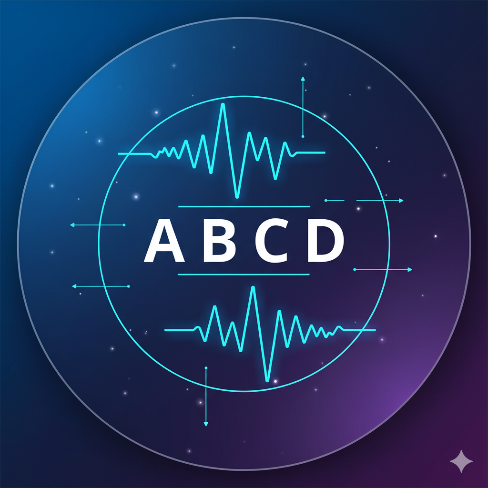

Une web app particulièrement intéressante pour les débutants ou les personnes souhaitant réviser leur phraséologie en français comme en anglais.
Visiter l'application
Une horloge à l'heure UTC à intégrer dans votre site Internet. Elle utilise les capteurs de mouvements et de lumière pour vous offrir une expérience amusante.
Visiter l'application
Le système Selcal est un système d'appel sélectif permettant à un opérateur au sol d'avertir un équipage d'un aéronef qu'il souhaite entrer en communication avec l'appareil. Chaque appareil se voit attribuer un code en 4 lettres qui forme un code à deux bi-tonalités audio.
Visiter l'application